Exact retained failed native run, saved outputs and file tabs; no active vendor panel or process replay.
Status: pass
Normal workspace loads.
Expected: Workflows visible.
Actual: Workflows visible.
raw 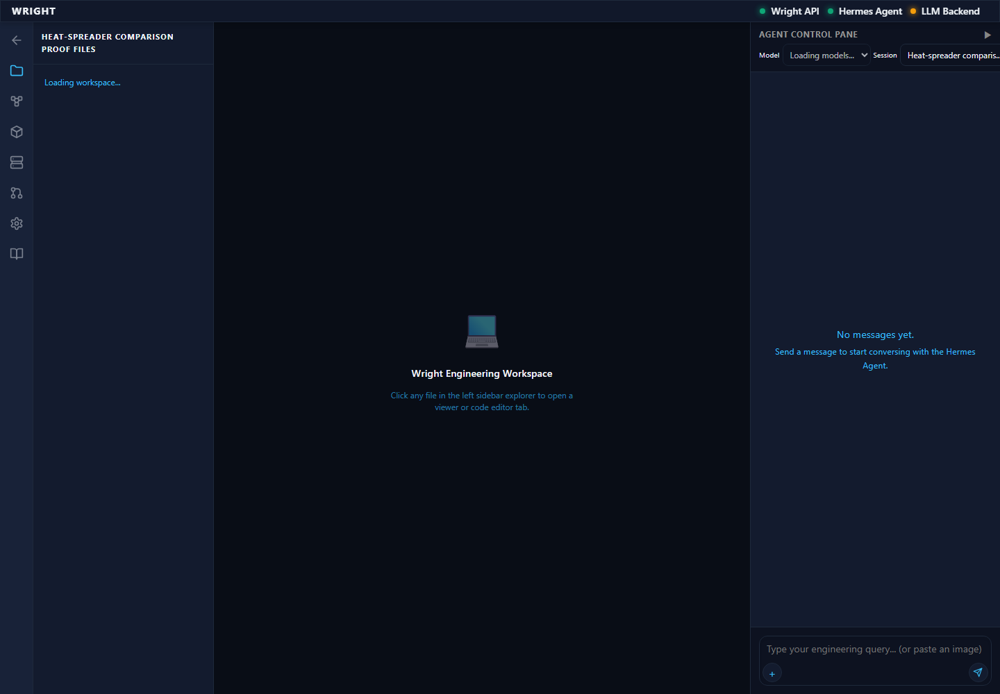
annotated 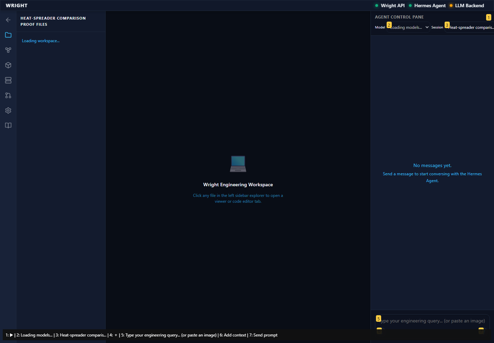
Established workflow editor remains; the active vendor demo entry is absent.
Expected: Editor controls without active print demo.
Actual: Editor controls present; Print a part demo absent.
raw 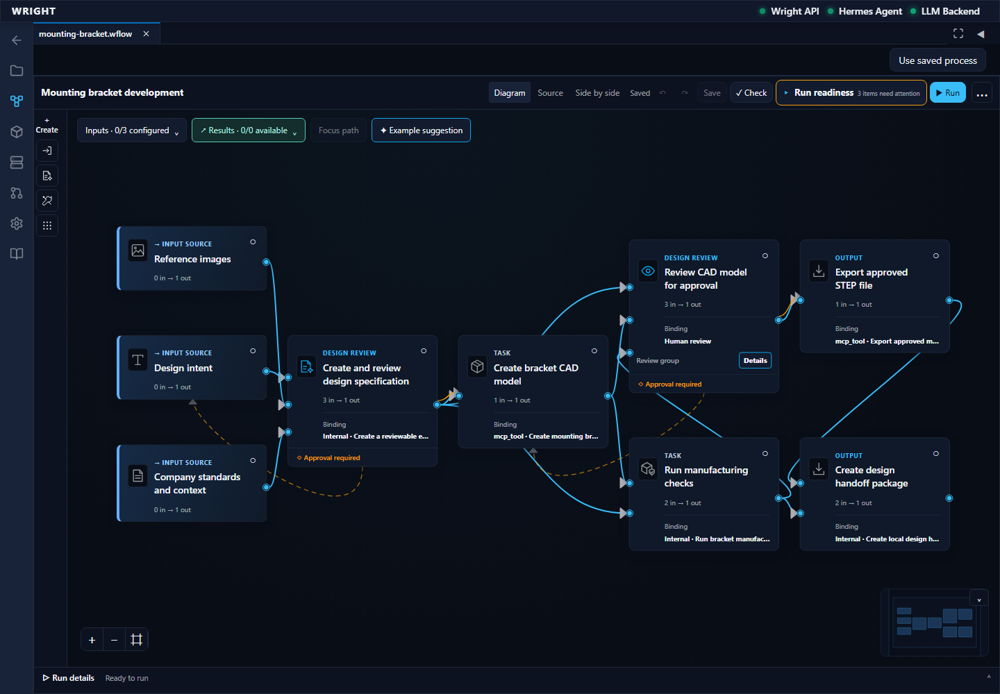
annotated 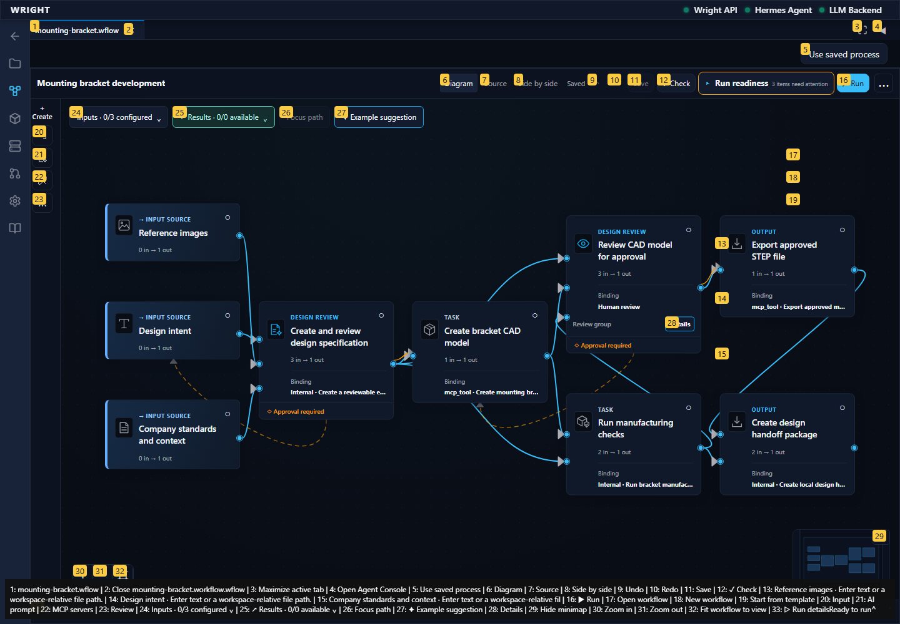
Historical link shows the retained failed run and eleven saved outputs without device controls.
Expected: Exact failed run, original error and saved outputs; no print controls.
Actual: Exact retained failed run/error and artifact links verified.
annotated 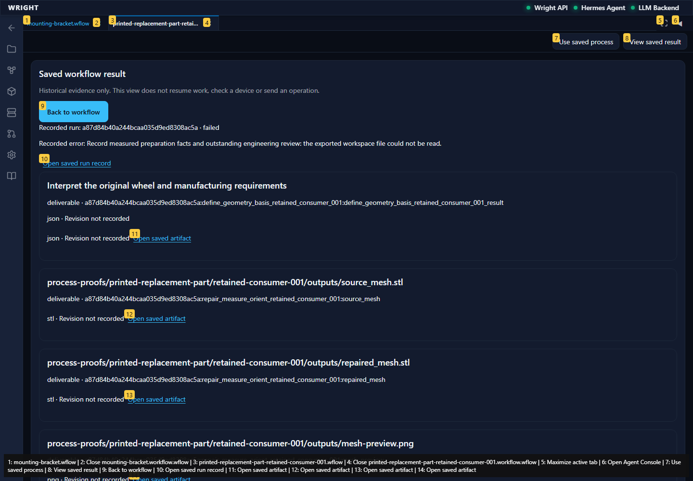
History returns to the same saved workflow.
Expected: Exact workflow editor restored.
Actual: Exact workflow editor and history reopen control visible.
raw 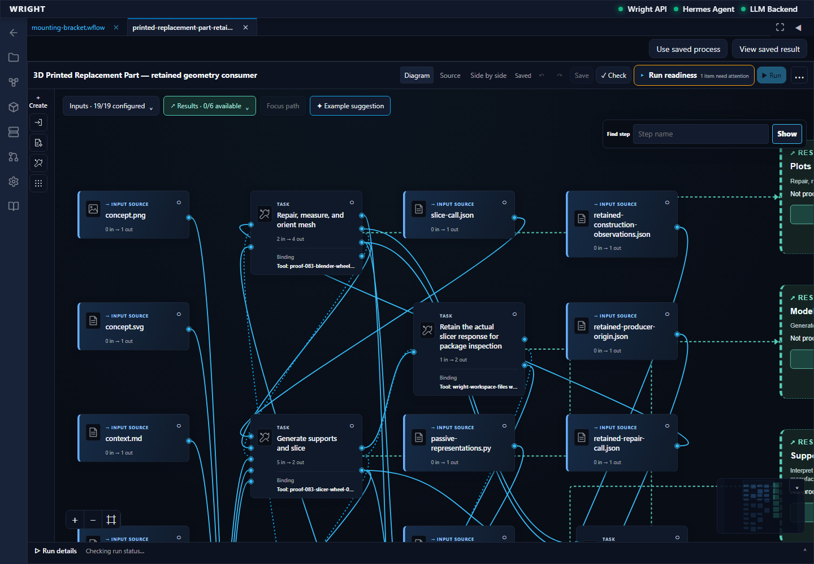
annotated 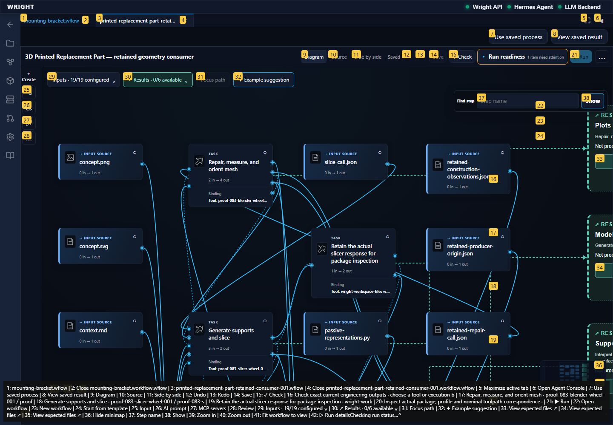
History reopens without preparing or executing a new process.
Expected: Same retained run.
Actual: Same retained run restored.
raw 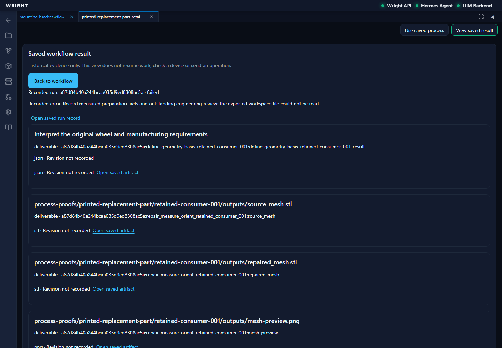
annotated 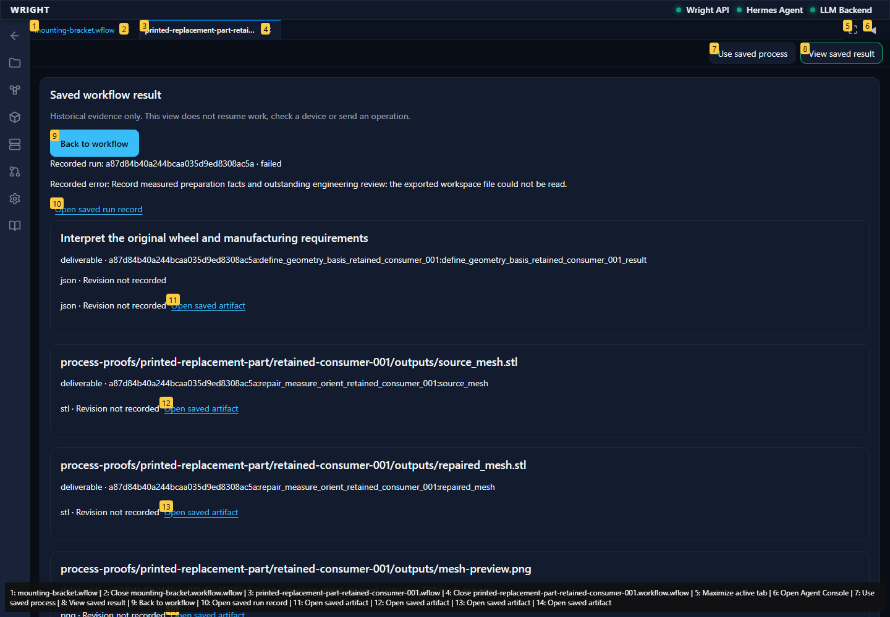
The exact recorder file opens in Wright’s file tabs.
Expected: Exact saved recorder tab selected.
Actual: Exact saved recorder file tab selected.
raw 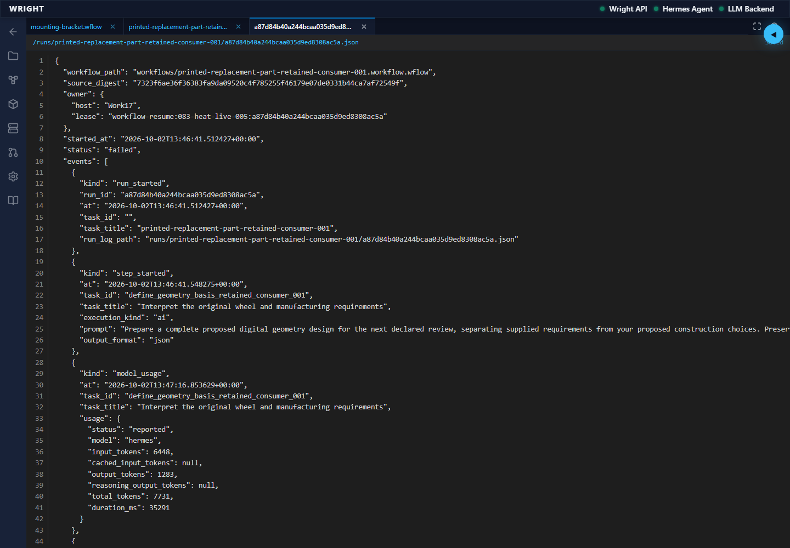
annotated 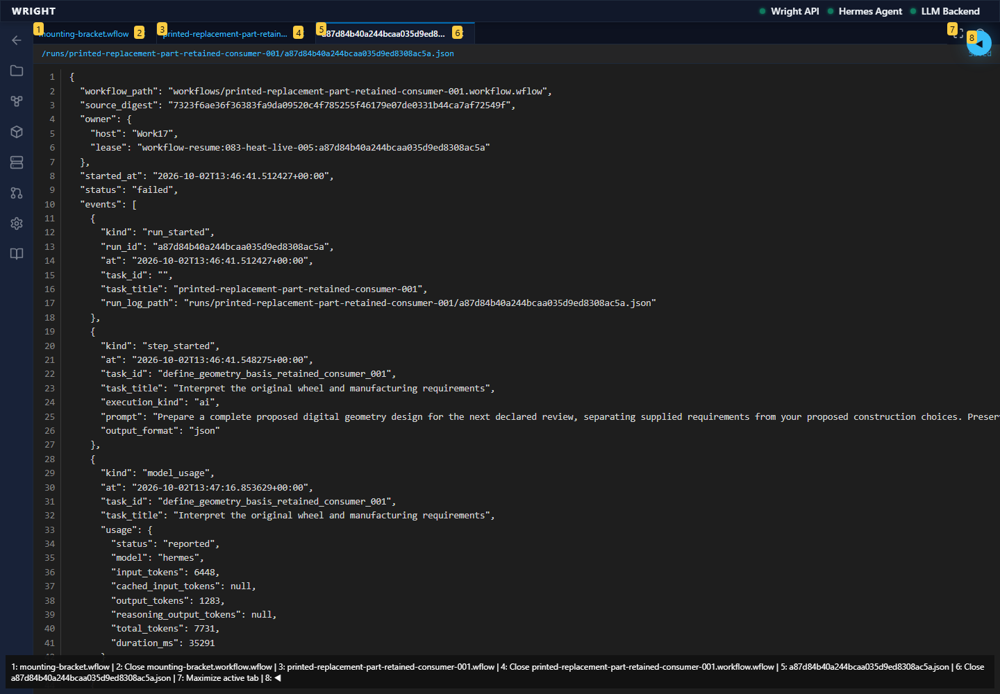